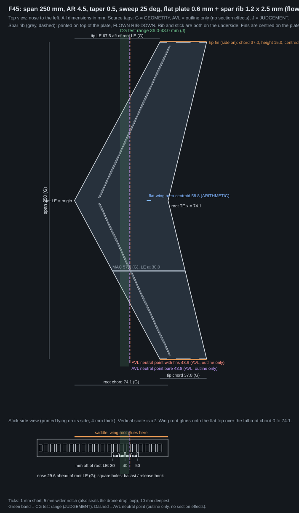
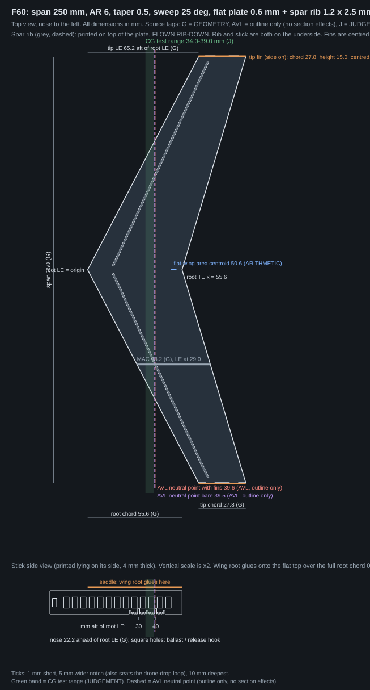
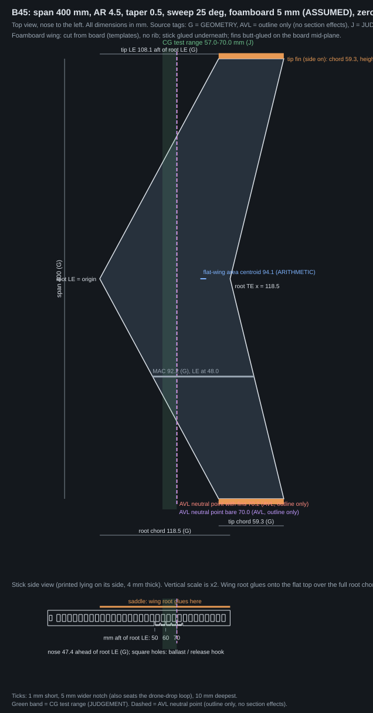

Flat-wing flight test
This page is a test plan, not a prediction. Nothing here says a flat wing will fly. Every number has a tag: GEOMETRY (exact from the drawing), ARITHMETIC (a simple sum, inputs stated), AVL (a computer calculation that knows only the outline), ASSUMED (a stated guess), JUDGEMENT (a choice we made), PROPOSED (to be agreed), UNKNOWN (to be measured by flying or weighing).
1. What this test is for
We want to find out, by flying, whether a thin flat wing can glide the same way every time, and what we lose by making it slimmer.
There are three specimens. Two printed wings (F45 and F60) have the same span, 250 mm, and differ only in how slim they are. One foamboard wing (B45) is bigger (400 mm span) and thicker. The foamboard wing differs from the printed ones in size, thickness and material, so it is its own test, not a third point on the same comparison.
The test has one control you change: where the balance point (centre of gravity, CG) sits along the body. You move it a millimetre at a time and drop each setting several times.
2. What we know and what we do not know
- Our computer model cannot tell us anything about a flat plate. Its air-flow solver (XFOIL) did not give usable answers for this shape. When we forced it to, results depended on how the back edge was drawn and jumped suddenly. So there is no predicted balance range, glide ratio or "will fly" for these wings.
- Published wind-tunnel tests of flat plates 2.6 to 4.3 % thick (Ananda, Sukumar & Selig 2015) stopped at Reynolds number 60,000. Reynolds number is a measure of how thick the air feels to the wing; low means harder.
- These wings fly at roughly 11,780 to 30,989 (ARITHMETIC, from the speed table below; the tip is the lowest). That is below the published tests.
- Those published wings were not swept 25 degrees and were not this small.
- There is no data on a lip (a small upturned back edge) on a plate. Not part of this test.
- The AVL neutral point is for the outline only. It is the best number we have for where to start, nothing more.
- Zero dihedral (wings flat, not tilted up). The earlier model used 3 degrees per panel. A one-piece flat wing cannot have it, so these wings are different from what was modelled.
- The printed wings carry a spar rib (1.2 mm wide, 2.5 mm high, along the quarter chord of each half). With a rib the section is no longer a plain flat plate: it is a flat plate with a spar underneath, which is what a practical flat wing would be. Any difference from the published plain-plate tests may partly come from the rib. If you want to separate the two effects, print one plain wing (run the generator with
--plain) as a comparison. - The rib prints on top of the plate, but the wing is flown rib-down: the rib and the stick are both on the underside. Reasoning, not a measured fact: the upper surface is the one where flow separation matters most, so we put the disturbance underneath.
- Foamboard is thick for this job. 5 mm foamboard (ASSUMED, measure yours) on the 400 mm wing is 5.6 % of the mean chord and 8.4 % of the tip chord. That is above the 2.6 to 4.3 % of the published plate tests, and the 250 mm printed wings are about 1 to 2 % thick. Foamboard is also too thick for the 250 mm wings, which is why the foamboard wing is the larger one.
3. The specimens






| F45 | F60 | B45 | |
|---|---|---|---|
| Material [GEOMETRY] | PLA, plate + spar rib | PLA, plate + spar rib | foamboard |
| Aspect ratio (span squared / area) [GEOMETRY] | 4.5 | 6 | 4.5 |
| Span, mm [GEOMETRY] | 250 | 250 | 400 |
| Area, cm² [GEOMETRY] | 138.9 | 104.2 | 355.6 |
| Root chord (front to back at the centre), mm [GEOMETRY] | 74.1 | 55.6 | 118.5 |
| Tip chord, mm [GEOMETRY] | 37.0 | 27.8 | 59.3 |
| Mean aerodynamic chord (MAC), mm [GEOMETRY] | 57.6 | 43.2 | 92.2 |
| MAC front edge, mm aft of root front edge [GEOMETRY] | 30.0 | 29.0 | 48.0 |
| Tip front edge, mm aft of root front edge [GEOMETRY] | 67.5 | 65.2 | 108.1 |
| Plate / board thickness, mm [GEOMETRY for printed; ASSUMED for foamboard] | 0.6 | 0.6 | 5 (ASSUMED; measure: ______) |
| Thickness as % of mean chord [GEOMETRY; ASSUMED for foamboard] | 1.08 | 1.44 | 5.62 |
| Thickness as % of tip chord [GEOMETRY; ASSUMED for foamboard] | 1.62 | 2.16 | 8.44 |
| Foamboard areal mass, g/m² [ASSUMED] | - | - | 300 (ASSUMED; weigh: ______) |
| Each tip fin: height x chord, mm [GEOMETRY] | 15.0 x 37.0 | 15.0 x 27.8 | 24.0 x 59.3 |
| Each tip fin, % of wing area [GEOMETRY] | 4.00 | 4.00 | 4.00 |
| Neutral point, bare, mm aft of root front edge [AVL, outline only] | 43.8 | 39.5 | 70.0 |
| Neutral point, with tip fins, mm [AVL, outline only] | 43.9 | 39.6 | 70.2 |
| Cn_beta at CL 0.3, bare (yaw stiffness, per radian) [AVL, outline only] | 0.0025 | 0.0023 | 0.0025 |
| Cn_beta at CL 0.3, with tip fins [AVL, outline only] | 0.0114 | 0.0136 | 0.0114 |
| Flat-wing area centre (balance point of the bare plate), mm [ARITHMETIC] | 58.8 | 50.6 | 94.1 |
AVL knows only the outline. It treats the wing as a flat sheet of no thickness, in smooth air with no low-Reynolds-number effects, and it does not know about the rib or the edges. Cn_beta is how strongly the wing turns back into the wind when it yaws; larger is steadier. Dihedral is zero in these runs.
4. What to print and what to cut
Printed wings (F45, F60)
- F45: wing.stl (print 1), fin.stl (print 2), stick.stl (print 1). Also parts.dxf, drawing.svg, geometry.json (every number with its tag). Wing box 105 x 251 x 3.1 mm (GEOMETRY; the height includes the rib); fin 37 x 15 x 0.6 mm; stick 104 x 7 x 4.0 mm.
- F60: wing.stl (print 1), fin.stl (print 2), stick.stl (print 1). Also parts.dxf, drawing.svg, geometry.json (every number with its tag). Wing box 93 x 251 x 3.1 mm (GEOMETRY; the height includes the rib); fin 28 x 15 x 0.6 mm; stick 78 x 7 x 4.0 mm.
Settings: layer height 0.2 mm, 100 % infill, print the wing and fins flat on the bed with the rib on top, the stick on its side. Units are millimetres. The wing's front edge at the centre is the origin of the STL. A 0.6 mm plate is 3 layers; check your slicer really makes it solid, not a thin wall with gaps. Try 0.4, 0.6, 0.8, 1 mm by re-running the generator with --thickness.
Foamboard wing (B45)
- Cutting templates, 1:1 on US Letter portrait: template_half_wing_letter.svg (ONE half wing, with the CG range band and the AVL neutral-point line, centreline marked "flip here for the other half") and template_fins_letter.svg (two fins). Each sheet has a 100 mm scale bar: measure it on your print, it must be exactly 100 mm.
- Printed stick for this wing: stick.stl, 166 x 7 x 4.0 mm (GEOMETRY). It is 166 mm long, within 180 mm.
- Also parts.dxf, drawing.svg, geometry.json. The whole wing is 400 x 167 mm, so the board must be at least that big.


5. Assemble
Printed wings
- Test-fit the fins: each fin has two slots, the wing has two tabs on each tip edge. Slot width is plate thickness plus 0.1 mm, slot length tab length plus 0.1 mm (GEOMETRY). Adjust if your printer is tight or loose.
- Press a fin onto each wing tip so it stands up, centred on the plate mid-plane (the plate, not including the rib). Glue the tabs.
- Check the wing lies flat on a table with no twist. Photograph it.
- Glue the stick onto the same face as the rib, in the gap between the two rib halves, saddle flat to the plate and root front edge on the stick mark labelled 0. In flight this face is the underside: the wing is flown rib-down, rib and stick both underneath.
- Weigh every part and fill in the "measured" column below.
Foamboard wing: cut and build
- Measure your board thickness and weigh a piece of known area. Write both in the table below (the numbers on this page are ASSUMED until you do).
- Print the half-wing template at 100 %; check the 100 mm bar. Trace the half onto the board, flip the template on the centreline, trace the other half. Cut with a sharp blade and a straight edge. The wing is one piece, zero dihedral.
- Edge shaping (procedure, JUDGEMENT): round the leading edge to about a half-ellipse two board-thicknesses long; taper the last 20 mm of the trailing edge to about 1 mm; same on both halves. Use a sanding block and check both sides match.
- Cut two fins from the fin template. Butt-glue each to the wing tip edge, centred on the board mid-plane (no tabs). Check they stand square.
- Glue the printed stick under the wing root (saddle flat to the board), root front edge on stick mark 0. The wing is flat, so it stays flat: no rib on this wing.
- Weigh every part. Check the board is not warped.
| Wing | Part | Assumed mass, g | Measured, g |
|---|---|---|---|
| F45 | wing plate 0.6 mm + rib | 11.22 [ARITHMETIC, material ASSUMED] | |
| F45 | 2 fins | 0.83 [ARITHMETIC, material ASSUMED] | |
| F45 | stick | 2.54 [ARITHMETIC, material ASSUMED] | |
| F45 | glue, tape, ballast, anything else | not assumed [UNKNOWN] | |
| F60 | wing plate 0.6 mm + rib | 8.64 [ARITHMETIC, material ASSUMED] | |
| F60 | 2 fins | 0.62 [ARITHMETIC, material ASSUMED] | |
| F60 | stick | 1.95 [ARITHMETIC, material ASSUMED] | |
| F60 | glue, tape, ballast, anything else | not assumed [UNKNOWN] | |
| B45 | foam wing (300 g/m² ASSUMED, thickness 5 mm ASSUMED) | 10.67 [ARITHMETIC, material ASSUMED] | |
| B45 | 2 foam fins | 0.85 [ARITHMETIC, material ASSUMED] | |
| B45 | stick | 4.08 [ARITHMETIC, material ASSUMED] | |
| B45 | glue, tape, ballast, anything else | not assumed [UNKNOWN] |
6. Balance
Find the CG with a knife edge or a pin: lay the stick on it, move until it balances level, read the position off the stick ticks (mm aft of the root front edge) and note to 0.5 mm. Ballast is M3 screws and nuts in the row of 3.2 mm square holes (5 mm pitch, along the nose and under the wing). Do the fine trim with a washer or coin taped on and slid along the stick. The ballast table gives the grams needed against hole position, but the CG you measure on the knife edge is what counts, not the table.
Nominal masses of things you may have (ASSUMED, weigh yours): US penny 2.5 g, US dime 2.27 g, US nickel 5 g. M3 screws, nuts and washers: weigh yours (UNKNOWN).
F45 CG settings (JUDGEMENT: start 15 % of MAC ahead of the AVL neutral point with fins, step 1 mm aft to the neutral point). Neutral point 43.9 mm [AVL, outline only]. These are places to try, not a predicted window.
| Setting | 1 | 2 | 3 | 4 | 5 | 6 | 7 | 8 |
|---|---|---|---|---|---|---|---|---|
| mm aft of root front edge | 36 | 37 | 38 | 39 | 40 | 41 | 42 | 43 |
| mm ahead of neutral point | 7.9 | 6.9 | 5.9 | 4.9 | 3.9 | 2.9 | 1.9 | 0.9 |
| ballast in the nose hole at -22.5 mm, g | 4.3 | 4.0 | 3.7 | 3.4 | 3.1 | 2.8 | 2.6 | 2.3 |
The wing, fins and stick alone balance at 53.3 mm (ARITHMETIC). A negative ballast number means that setting is already behind where the bare aircraft balances, so nose ballast cannot reach it; the full table is ballast_table.csv (four nose holes).
F60 CG settings (JUDGEMENT: start 15 % of MAC ahead of the AVL neutral point with fins, step 1 mm aft to the neutral point). Neutral point 39.6 mm [AVL, outline only]. These are places to try, not a predicted window.
| Setting | 1 | 2 | 3 | 4 | 5 | 6 |
|---|---|---|---|---|---|---|
| mm aft of root front edge | 34 | 35 | 36 | 37 | 38 | 39 |
| mm ahead of neutral point | 5.6 | 4.6 | 3.6 | 2.6 | 1.6 | 0.6 |
| ballast in the nose hole at -12.5 mm, g | 2.8 | 2.5 | 2.2 | 2.0 | 1.7 | 1.4 |
The wing, fins and stick alone balance at 45.6 mm (ARITHMETIC). A negative ballast number means that setting is already behind where the bare aircraft balances, so nose ballast cannot reach it; the full table is ballast_table.csv (four nose holes).
B45 CG settings (JUDGEMENT: start 15 % of MAC ahead of the AVL neutral point with fins, step 1 mm aft to the neutral point). Neutral point 70.2 mm [AVL, outline only]. These are places to try, not a predicted window.
| Setting | 1 | 2 | 3 | 4 | 5 | 6 | 7 | 8 | 9 | 10 | 11 | 12 | 13 | 14 |
|---|---|---|---|---|---|---|---|---|---|---|---|---|---|---|
| mm aft of root front edge | 57 | 58 | 59 | 60 | 61 | 62 | 63 | 64 | 65 | 66 | 67 | 68 | 69 | 70 |
| mm ahead of neutral point | 13.2 | 12.2 | 11.2 | 10.2 | 9.2 | 8.2 | 7.2 | 6.2 | 5.2 | 4.2 | 3.2 | 2.2 | 1.2 | 0.2 |
| ballast in the nose hole at -37.5 mm, g | 4.0 | 3.8 | 3.6 | 3.4 | 3.2 | 3.0 | 2.8 | 2.6 | 2.4 | 2.3 | 2.1 | 1.9 | 1.8 | 1.6 |
The wing, fins and stick alone balance at 81.0 mm (ARITHMETIC). A negative ballast number means that setting is already behind where the bare aircraft balances, so nose ballast cannot reach it; the full table is ballast_table.csv (four nose holes).
7. Masses, speeds and a rough stiffness check
| Wing | Plate / board, mm | Plate g | Rib g | Wing g | All-up, no ballast g | All-up with ballast g | Loading N/m² (with ballast) | Speed at CL 0.3 / 0.5, m/s | Re tip / mean chord (CL 0.3) | Re tip / mean chord (CL 0.5) | Rough tip bend at 1 g, mm: plate only | with rib |
|---|---|---|---|---|---|---|---|---|---|---|---|---|
| F45 | 0.4 | 6.9 | 0.9 | 7.8 | 10.9 | 12.7 | 9.0 | 7.0 / 5.4 | 17,276 / 25,914 | 13,382 / 20,073 | 15.6 | 0.6 |
| F45 | 0.6 | 10.3 | 0.9 | 11.2 | 14.6 | 17.7 | 12.5 | 8.2 / 6.4 | 20,364 / 30,545 | 15,774 / 23,660 | 6.4 | 0.7 |
| F45 | 0.8 | 13.8 | 0.9 | 14.7 | 18.3 | 22.7 | 16.0 | 9.3 / 7.2 | 23,041 / 34,562 | 17,848 / 26,771 | 3.5 | 0.7 |
| F45 | 1 | 17.2 | 0.9 | 18.1 | 22.0 | 27.6 | 19.5 | 10.3 / 8.0 | 25,438 / 38,157 | 19,704 / 29,557 | 2.2 | 0.7 |
| F60 | 0.4 | 5.2 | 0.9 | 6.1 | 8.4 | 9.5 | 8.9 | 7.0 / 5.4 | 12,911 / 19,366 | 10,001 / 15,001 | 15.5 | 0.5 |
| F60 | 0.6 | 7.7 | 0.9 | 8.6 | 11.2 | 13.2 | 12.4 | 8.2 / 6.4 | 15,207 / 22,811 | 11,780 / 17,669 | 6.4 | 0.5 |
| F60 | 0.8 | 10.3 | 0.9 | 11.2 | 14.0 | 16.8 | 15.9 | 9.3 / 7.2 | 17,200 / 25,800 | 13,323 / 19,985 | 3.4 | 0.6 |
| F60 | 1 | 12.9 | 0.9 | 13.8 | 16.8 | 20.5 | 19.3 | 10.3 / 7.9 | 18,985 / 28,477 | 14,706 / 22,058 | 2.1 | 0.5 |
| B45 | 5 | 10.7 | 0.0 | 10.7 | 15.6 | 18.2 | 5.0 | 5.2 / 4.1 | 20,659 / 30,989 | 16,003 / 24,004 | UNKNOWN | UNKNOWN |
Masses: printed parts = volume x 1.24 g/cm³ (ARITHMETIC; density ASSUMED, 100 % solid); foamboard = area x 300 g/m² (ASSUMED). With-ballast uses the middle CG setting and the default nose hole. Speed: sqrt(2 x weight / (air density x area x CL)), air density 1.225 (ASSUMED). Reynolds number = speed x chord / 1.5e-05 (ASSUMED). Tip bend is ROUGH and ASSUMED: one wing half as a cantilever, stiffness 3.3 GPa (ASSUMED), half the weight spread evenly, ignoring sweep, taper and the wing's own weight. It only shows which thicknesses are floppy. Foamboard stiffness is UNKNOWN, so no bend is given for it. Full table: scale_table.csv.
Plate only against plate plus rib (second moment of area, ROUGH / ASSUMED)
| Wing | Mean chord c, mm | Plate t, mm | Rib w x H, mm | Neutral axis above plate bottom, mm | I plate only = c t³/12, mm⁴ | I with rib (T-section), mm⁴ | Ratio |
|---|---|---|---|---|---|---|---|
| F45 | 55.6 | 0.6 | 1.2 x 2.5 | 0.43 | 1.00 | 9.2 | 9x |
| F60 | 41.7 | 0.6 | 1.2 x 2.5 | 0.47 | 0.75 | 8.7 | 12x |
ARITHMETIC with ASSUMED inputs. T-section: area A1 = c x t (centre t/2), A2 = w x H (centre t + H/2), neutral axis y = (A1 y1 + A2 y2)/(A1 + A2), I = sum of (own I + A d²). It treats the rib as running along the whole half span at the mean chord; the real rib is slanted and stops 3 mm short of the tip, so the real gain is smaller. The wing's tip bend scales as 1/I.
B45: this craft can be ballasted over a wide range of wing loadings
The printed ones cannot. Wing loading, speed and bob period against all-up mass for this craft (ARITHMETIC; use your measured mass):
| Measured mass, g | B45 speed at CL 0.3 / 0.5, m/s | B45 loading, N/m² | B45 bob period at those speeds, s |
|---|---|---|---|
| 15 | 4.7 / 3.7 | 4.1 | 2.1 / 1.7 |
| 20 | 5.5 / 4.2 | 5.5 | 2.5 / 1.9 |
| 25 | 6.1 / 4.7 | 6.9 | 2.8 / 2.1 |
| 30 | 6.7 / 5.2 | 8.3 | 3.0 / 2.4 |
| 40 | 7.7 / 6.0 | 11.0 | 3.5 / 2.7 |
8. Launch: drone drop
The launch method is a drop from a 5-inch FPV quad at an RC field. This is a procedure, not a prediction. We do not claim either release method below works.
- Hang the glider level from a thread loop round the stick and over the wing root, at the balance point (the CG you measured). The 5 mm marks on the stick are wider notches that seat the loop, so you can put it back in the same place; use the nearest one, and for finer positions the nose hole and the ballast holes.
- Two ways to release it. (1) Open wire hook and a jerk: the cheapest, try it first. The quad releases the loop by a sharp acceleration or deceleration. The release attitude and speed will vary from drop to drop, so write down what the quad was doing (in notes). (2) Pin release: pulling a pin frees the loop. More repeatable; for later.
- Release in forward flight at roughly the glide speed for the wing loading (tables below), not from a hover (the propeller wash would hit the wing).
- Same height every time: 10 m suggested (JUDGEMENT). Calm air. Do a dummy drop first to check the glider clears the props. Use bright tape or colour so you can find it.
- Why height matters (ARITHMETIC): a glider that is out of trim bobs up and down slowly. The period of that bob (phugoid) is about T = pi x sqrt(2) x V / g, which is about 0.45 x V seconds. A glider at 7 m/s bobs about every 3 seconds. You need several seconds of flight to see whether it settles or not.
- Record from ground video: time to the ground, distance, heading change (write it in the notes) and the outcome. Also write the release height and the quad's speed at release.
- Start at the first CG setting for the wing and drop 5 times (JUDGEMENT). If it glides at that setting, drop 10 times in total. Move the CG 1 mm aft. Repeat. Continue to the last setting or until it will not glide.
| Measured mass, g | F45 speed at CL 0.3 / 0.5, m/s | F45 loading, N/m² | F45 bob period at those speeds, s | F60 speed at CL 0.3 / 0.5, m/s | F60 loading, N/m² | F60 bob period at those speeds, s |
|---|---|---|---|---|---|---|
| 10 | 6.2 / 4.8 | 7.1 | 2.8 / 2.2 | 7.2 / 5.5 | 9.4 | 3.2 / 2.5 |
| 12 | 6.8 / 5.3 | 8.5 | 3.1 / 2.4 | 7.8 / 6.1 | 11.3 | 3.6 / 2.8 |
| 14 | 7.3 / 5.7 | 9.9 | 3.3 / 2.6 | 8.5 / 6.6 | 13.2 | 3.8 / 3.0 |
| 16 | 7.8 / 6.1 | 11.3 | 3.6 / 2.8 | 9.1 / 7.0 | 15.1 | 4.1 / 3.2 |
| 18 | 8.3 / 6.4 | 12.7 | 3.8 / 2.9 | 9.6 / 7.4 | 16.9 | 4.4 / 3.4 |
| 20 | 8.8 / 6.8 | 14.1 | 4.0 / 3.1 | 10.1 / 7.8 | 18.8 | 4.6 / 3.6 |
ARITHMETIC. Speed = sqrt(2 x weight / (air density x wing area x CL)), air density 1.225 (ASSUMED). Use your measured mass (weigh the finished glider with its ballast). CL 0.3 is the faster case, CL 0.5 the slower. These speeds say what the quad should do at release. They do not say the glider will fly at that CL. Bob period T = pi x sqrt(2) x V / g (textbook estimate for a glider; ARITHMETIC). The foamboard wing's table is in section 7.
Hand launch is for gross trim only. One or two seconds of flight sorts a dive from a pitch-up, so it is fine for finding roughly where to start. It cannot show a repeatable glide. Do not mix hand and drone results: the log has a launch_method column and the results page keeps them apart.
9. Record
Use log_template.csv. One row per drop. Columns: date, wing (F45, F60 or B45), thickness_mm, config (for example "rib-down, tip fins"), measured_mass_g, measured_cg_mm, launch_method (free text, for example drone drop, open hook; drone drop, pin; hand), release_no, outcome, release_height_m, release_speed_mps, distance_m, time_s, notes. Rows whose wing starts with EXAMPLE are ignored. Heading change from the video goes in notes.
Outcome must be exactly one of: steady glide, dive, pitch-up or stall, roll-off left, roll-off right, yaw wander, oscillation. For steady glides also write distance and time to the ground (from the video).
Make the results page with py -B rigid_glider/flat_test_report.py your_log.csv. It writes results/index.html with counts per CG setting for each wing, config and launch method. It does not compare with the model.
Proposed pass rule (PROPOSED, to be agreed before flying): at least 8 of 10 releases are steady glides at one setting, and both settings 1 mm either side also glide (at least half of their releases are steady glides).
10. What each outcome would mean
These are conditional readings, not predictions.
- No setting glides: a clean flat wing of this size does not trim itself on its own at these settings. Try a lip next; that is a different test.
- Gliding at only one setting: the usable balance window is narrower than the 1 mm steps. Repeat with finer steps (0.5 mm) before concluding.
- Glides over several settings in a row: a window exists at this size. Its width and position are measured; compare them with the AVL neutral point.
- Dive at forward settings and stall or pitch-up at rear settings: the normal pattern; the glide lies between.
- Dive at every setting you can reach: the wing may need the CG further aft than the settings allow, or more nose-up trim. Check the aircraft really balances where you think.
- Pitch-up or stall at every setting: the CG may be too far aft, or the wing is twisted or bent. Check flatness.
- Roll-off to one side every time: check twist, fin alignment and flatness before blaming the shape.
- Yaw wander or oscillation: the fins may be too small or too soft. Compare the thinner and thicker wing.
- F45 works and F60 does not: slimmer costs repeatability, at this thickness and size, with this rib.
- Both printed wings work: slimmer did not cost anything in this test; the numbers (window width, steady fraction) still matter.
- Neither printed wing works: say so, and do not read it as a verdict on all flat wings; thickness, rib, print quality and launch were also fixed.
- A printed wing glides, and you want to know whether the rib matters: print one plain wing (
--plain) and fly it the same way. Until then, a difference from published plain-plate tests may partly come from the rib. - The foamboard wing glides (or does not): that says something about foamboard at 400 mm and about 5 mm thick. It does not say anything about the printed wings, because size, thickness and material all differ.
11. All assumptions
| Item | Value | Source tag | What it means | How to replace with a measurement |
|---|---|---|---|---|
| PLA density | 1.24 g/cm3 | ASSUMED | Used for every printed mass. 100 % solid. Replace with weighed parts. | weigh each part |
| PLA stiffness E | 3.3 GPa | ASSUMED | Only used for the rough tip-bend estimate. Printed flat plates are stiffer along the print lines than across them. | measure with a deflection test |
| Air density | 1.225 kg/m3 | ASSUMED | Sea level, standard day. Used for speed. | none needed for a rough check |
| Air viscosity | 1.5e-05 m2/s | ASSUMED | Used for Reynolds number. | none needed for a rough check |
| Printed plate thickness (default) | 0.6 mm | GEOMETRY | 3 layers of 0.2 mm. The printed part may differ by a layer. | measure with calipers |
| Spar rib (printed wings, default) | 1.2 mm wide x 2.5 mm high above the plate, along the quarter chord of each half, 3 mm short of the tip, gap 4.4 mm at the centre | GEOMETRY | Printed on top of the plate, flown rib-down with the stick. With a rib the wing is a flat plate with a spar underneath, not a plain plate. Reasoning, not a measured fact: the upper surface is where flow separation matters most, so the disturbance goes underneath. | print one plain wing (--plain) to compare |
| Rib stiffness estimate | T-section second moment of area at the mean chord | ASSUMED | ROUGH: treats the rib as running the whole half span; ignores sweep and taper. | flex the real wing and look |
| Dihedral | 0.0 deg | GEOMETRY | Zero. A one-piece flat wing cannot have dihedral. The earlier model used 3 deg per panel, so these wings differ from what was modelled. | - |
| Foamboard thickness | 5.0 mm | ASSUMED | Typical craft foamboard. Kai to measure; the page has a blank for it. It is above the 2.6-4.3 % of the published plate tests. | measure with calipers |
| Foamboard areal mass | 300.0 g/m2 | ASSUMED | Typical light craft foamboard with paper. To be weighed (cut a known area and weigh it). | weigh a measured area |
| Glue, tape, paint mass | 0.0 g | UNKNOWN | Not included in any mass here. | weigh the finished aircraft |
| Tip fin size | 24 mm x span/400 tall, chord = tip chord | GEOMETRY | Each fin is about 4 % of wing area. Fins are a design choice, not a result. Printed fins are centred on the plate mid-plane (not including the rib); foamboard fins are butt-glued centred on the board mid-plane. | - |
| Fin / tab clearance (printed) | slot = plate + 0.1 mm wide, tab + 0.1 mm long | GEOMETRY | A printer may need more or less. Test-fit before gluing. | adjust in flat_test.py |
| Stick shape | 4 mm x 7 mm, nose 0.4 root chords ahead | GEOMETRY | Square holes because the part is built on a grid. | - |
| Foamboard edge shaping | round the leading edge to about a half-ellipse 2 board-thicknesses long; taper the last 20 mm of the trailing edge to about 1 mm; same on both halves | JUDGEMENT | A procedure we picked, not a result. Use a sanding block and check both sides match. | - |
| CG test start | 0.15 MAC ahead of the AVL neutral point | JUDGEMENT | Picked to start on the safe (nose-heavy) side. Not a prediction. | move if flights say so |
| CG step | 1.0 mm | JUDGEMENT | Step aft between settings. | - |
| Releases per setting | 5, then 10 at any setting that glides | JUDGEMENT | A small count; luck can matter. | - |
| Pass rule | >= 8 of 10 steady at one setting and both 1 mm neighbours also glide | PROPOSED | To be agreed before flying. 'Also glide' = at least half of that neighbour's releases are steady glides. | agree first |
| AVL neutral point and Cn_beta | AVL 3.52, flat camber line, zero thickness | AVL | AVL knows only the outline. It does not know the thickness, a rib, the low Reynolds number or the edges. | compare with a measured balance point |
| Weight on the wing for bend estimate | all-up mass with ballast, 1 g | ASSUMED | Each half carries half the weight spread evenly; ignores sweep, taper and inertia relief. Shows which thicknesses are floppy, nothing more. | look at the real wing under load |
| Ballast hardware | M3 screws and nuts in 3.2 mm square holes at 5 mm pitch; fine trim with a taped-on washer or coin slid along the stick | UNKNOWN | M3 hardware masses vary: weigh yours. The measured CG on the knife edge is what counts, not the ballast table. | weigh what you use |
| US penny | 2.5 g | ASSUMED | Nominal mass. Weigh yours. | weigh |
| US dime | 2.27 g | ASSUMED | Nominal mass. Weigh yours. | weigh |
| US nickel | 5.0 g | ASSUMED | Nominal mass. Weigh yours. | weigh |
| Drone drop height | 10.0 m | JUDGEMENT | Suggested release height from a 5-inch FPV quad. The same every time. | change if the field or the flights say so |
| Phugoid period | T = pi x sqrt(2) x V / g, about 0.45 x V seconds s | ARITHMETIC | Textbook estimate of the slow nose-up / nose-down oscillation period of a glider at speed V. It shows why a few seconds of flight are needed. | read it from the video |
| Published plate data | Ananda, Sukumar & Selig 2015 | ASSUMED | 4.3 % plate (2.6-4.3 % range), AR 2-5, unswept, Re 60,000 and above. These wings are swept, fly lower and (printed) carry a rib. Not the same test. | - |
Same table in assumptions.csv.
12. How to regenerate
py -B rigid_glider/flat_test.py from the Codes folder. Parameters are at the top of flat_test.py: change span, aspect ratios, thickness, rib size, fin size, clearances, foamboard thickness and areal mass. Options: --span, --ar, --thickness, --plain (no rib on the printed wings), --no-foam, --out. Running it again overwrites this folder. The spec is in rigid_glider/FLAT_TEST.md.